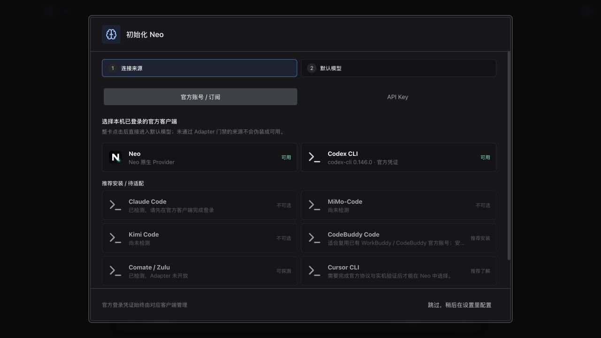
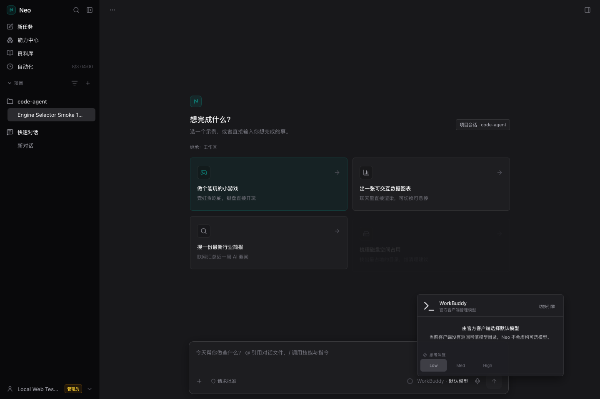
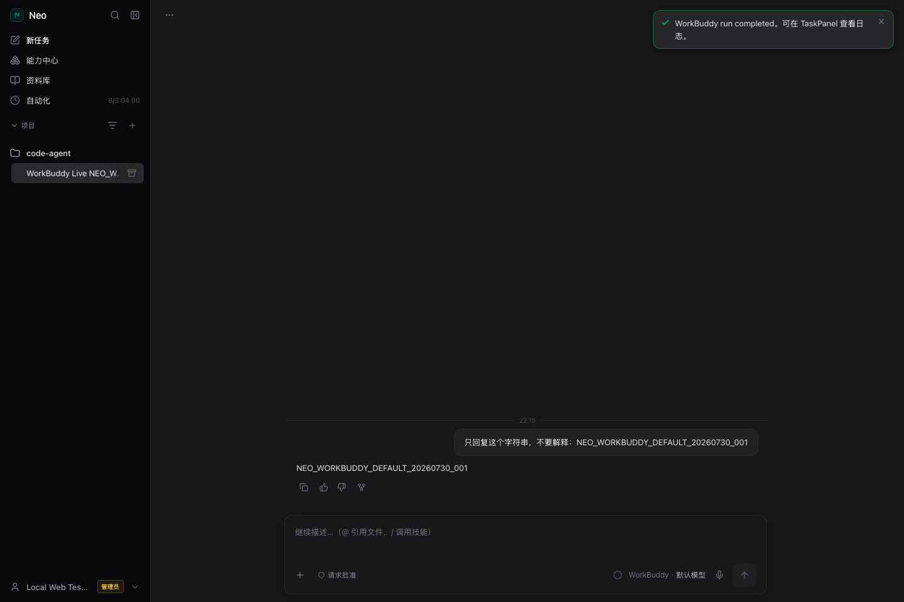

Neo × WorkBuddy / Evidence Gallery
从两步 Onboarding 到真实对话
只保留“连接来源 → 默认模型”两步，并补上会话页真实的 WorkBuddy 模型弹窗和完成对话截图。
当前实机不能选择 Hy3。 本机 WorkBuddy 5.3.5 / CodeBuddy CLI 2.115.0 返回的可信能力中不含 hy3，所以会话模型弹窗按 fail-closed 显示 client_default；真实对话由客户端解析为 glm-5.2。旧四步稿与 Hy3 演示快照已从主展示移除。

WorkBuddy · client_default。
NEO_WORKBUDDY_HTML_20260730_2115，右上角显示运行完成通知，输入区显示 WorkBuddy · client_default。Enginecodebuddy_code
CLI2.115.0
Selected modelclient_default
Runtime modelglm-5.2